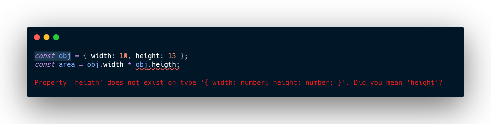

TypeScript for the New Programmer
Congratulations on choosing TypeScript as one of your first languages — you're already making good
decisions!
You've probably already heard that TypeScript is a “flavor” or “variant” of JavaScript. The
relationship
between TypeScript (TS) and JavaScript (JS) is rather unique among modern programming languages, so
learning
more about this relationship will help you understand how TypeScript adds to JavaScript.
What is JavaScript? A Brief History
JavaScript (also known as ECMAScript) started its life as a simple scripting language for browsers. At the time it was invented, it was expected to be used for short snippets of code embedded in a web page — writing more than a few dozen lines of code would have been somewhat unusual. Due to this, early web browsers executed such code pretty slowly. Over time, though, JS became more and more popular, and web developers started using it to create interactive experiences.
Web browser developers responded to this increased JS usage by optimizing their execution engines (dynamic compilation) and extending what could be done with it (adding APIs), which in turn made web developers use it even more. On modern websites, your browser is frequently running applications that span hundreds of thousands of lines of code. This is the long and gradual growth of “the web”, starting as a simple network of static pages, and evolving into a platform for rich applications of all kinds.
More than this, JS has become popular enough to be used outside the context of browsers, such as implementing JS servers using node.js. The “run anywhere” nature of JS makes it an attractive choice for cross-platform development. There are many developers these days that use only JavaScript to program their entire stack!
To summarize, we have a language that was designed for quick uses, and then grew to a full-fledged tool to write applications with millions of lines. Every language has its own quirks — oddities and surprises, and JavaScript's humble beginning makes it have many of these. Some examples:
-
JavaScript's equality operator (==) coerces its operands, leading to unexpected behavior:
-
JavaScript also allows accessing properties which aren't present:

Most programming languages would throw an error when these sorts of errors occur, some would do so during compilation — before any code is running. When writing small programs, such quirks are annoying but manageable; when writing applications with hundreds or thousands of lines of code, these constant surprises are a serious problem
TypeScript: A Static Type Checker
We said earlier that some languages wouldn't allow those buggy programs to run at all. Detecting errors in code without running it is referred to as static checking. Determining what's an error and what's not based on the kinds of values being operated on is known as static type checking.
TypeScript checks a program for errors before execution, and does so based on the kinds of values, making it a static type checker. For example, the last example above has an error because of the type of obj. Here's the error TypeScript found:
A Typed Superset of JavaScript
How does TypeScript relate to JavaScript, though?
Syntax
TypeScript is a language that is a superset of JavaScript: JS syntax is therefore legal TS. Syntax refers to the way we write text to form a program. For example, this code has a syntax error because it's missing a ) :
TypeScript doesn’t consider any JavaScript code to be an error because of its syntax. This means you can take any working JavaScript code and put it in a TypeScript file without worrying about exactly how it is written.
Types
However, TypeScript is a typed superset, meaning that it adds rules about how different kinds of values can be used. The earlier error about obj.heigth was not a syntax error: it is an error of using some kind of value (a type) in an incorrect way.
As another example, this is JavaScript code that you can run in your browser, and it will log a value:
This syntactically-legal program logs Infinity. TypeScript, though, considers division of number by an array to be a nonsensical operation, and will issue an error:

It's possible you really did intend to divide a number by an array, perhaps just to see what happens, but most of the time, though, this is a programming mistake. TypeScript's type checker is designed to allow correct programs through while still catching as many common errors as possible. (Later, we'll learn about settings you can use to configure how strictly TypeScript checks your code.)
If you move some code from a JavaScript file to a TypeScript file, you might see type errors depending on how the code is written. These may be legitimate problems with the code, or TypeScript being overly conservative. Throughout this guide we'll demonstrate how to add various TypeScript syntax to eliminate such errors.
Runtime Behavior
TypeScript is also a programming language that preserves the runtime behavior of JavaScript. For example, dividing by zero in JavaScript produces Infinity instead of throwing a runtime exception. As a principle, TypeScript never changes the runtime behavior of JavaScript code.
This means that if you move code from JavaScript to TypeScript, it is guaranteed to run the same way, even if TypeScript thinks that the code has type errors.
Keeping the same runtime behavior as JavaScript is a foundational promise of TypeScript because it means you can easily transition between the two languages without worrying about subtle differences that might make your program stop working.
Erased Types
Roughly speaking, once TypeScript's compiler is done with checking your code, it erases the types to produce the resulting “compiled” code. This means that once your code is compiled, the resulting plain JS code has no type information.
This also means that TypeScript never changes the behavior of your program based on the types it inferred. The bottom line is that while you might see type errors during compilation, the type system itself has no bearing on how your program works when it runs.
Finally, TypeScript doesn't provide any additional runtime libraries. Your programs will use the same standard library (or external libraries) as JavaScript programs, so there's no additional TypeScript-specific framework to learn.
Learning JavaScript and TypeScript
We frequently see the question “Should I learn JavaScript or TypeScript?“.
The answer is that you can't learn TypeScript without learning JavaScript! TypeScript shares syntax and runtime behavior with JavaScript, so anything you learn about JavaScript is helping you learn TypeScript at the same time.
There are many, many resources available for programmers to learn JavaScript; you should not ignore these resources if you're writing TypeScript. For example, there are about 20 times more StackOverflow questions tagged javascript than typescript, but all of the javascript questions also apply to TypeScript.
If you find yourself searching for something like “how to sort a list in TypeScript”, remember: TypeScript is JavaScript's runtime with a compile-time type checker. The way you sort a list in TypeScript is the same way you do so in JavaScript. If you find a resource that uses TypeScript directly, that's great too, but don't limit yourself to thinking you need TypeScript-specific answers for everyday questions about how to accomplish runtime tasks.